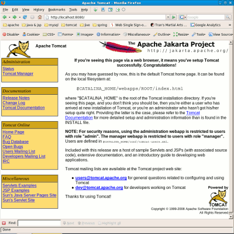

TDS Tutorial: Getting StartedTDS Tutorial: Getting Started
TDS Tutorial: Getting StartedTDS Tutorial: Getting StartedNote: while there are different distributors of Java and servlet containers, Unidata develops, uses and tests the THREDDS Data Server using Sun Java and the Apache Tomcat servlet container.
Installing the Sun JDK requires three steps:
jdk-6u10-linux-x64.bin
-bash-3.2$ cp jdk-6u10-linux-x64.bin ~ -bash-3.2$ cd
-bash-3.2$ ls -l jdk-6u10-linux-x64.bin -rw-r--r-- 1 thredds Unidata 72753411 2008-10-02 16:39 jdk-6u10-linux-x64.bin -bash-3.2$ chmod 755 jdk-6u10-linux-x64.bin -bash-3.2$ ls -l jdk-6u10-linux-x64.bin -rwxr-xr-x 1 thredds Unidata 72753411 2008-10-02 16:39 jdk-6u10-linux-x64.bin
-bash-3.2$ ./jdk-6u10-linux-x64.bin
(If you are prompted to register your Java installation, ignore it.)
$JAVA_HOME environment variable.-bash-3.2$ export JAVA_HOME=/home/thredds/jdk1.6.0_10 -bash-3.2$ echo $JAVA_HOME /home/thredds/jdk1.6.0_10
Troubleshooting:
Note: the latest version of the JDK 1.6 has already been installed on your workshop computer at /opt/jdk
Installing Tomcat requires three steps:
apache-tomcat-6.0.18.tar.gz
-bash-3.2$ cp apache-tomcat-6.0.18.tar.gz ~ -bash-3.2$ cd
-bash-3.2$ tar xvzf apache-tomcat-6.0.18.tar.gz -bash-3.2$ ls -ld apache-tomcat* drwxr-xr-x 9 thredds Unidata 4096 2008-10-17 16:00 apache-tomcat-6.0.18 -rw-r--r-- 1 thredds Unidata 6142197 2008-07-30 03:51 apache-tomcat-6.0.18.tar.gz
$TOMCAT_HOME environment variable.-bash-3.2$ export TOMCAT_HOME=/home/thredds/apache-tomcat-6.0.18 -bash-3.2$ echo $TOMCAT_HOME /home/thredds/apache-tomcat-6.0.18
Troubleshooting:
Note: Tomcat has already been installed on your workshop computer at /opt/apache-tomcat-6.0.18
$TOMCAT_HOMEMove into the new Tomcat directory and have a look at the directory structure:
-bash-3.2$ cd apache-tomcat-6.0.18/ -bash-3.2$ ls -l --group-directories-first total 88 drwxr-xr-x 2 thredds Unidata 4096 2008-11-06 16:45 bin drwxr-xr-x 2 thredds Unidata 4096 2008-11-06 16:52 conf drwxr-xr-x 2 thredds Unidata 4096 2008-11-06 16:45 lib drwxr-xr-x 2 thredds Unidata 4096 2008-11-06 16:47 logs drwxr-xr-x 2 thredds Unidata 4096 2008-11-06 16:45 temp drwxr-xr-x 7 thredds Unidata 4096 2008-07-21 18:01 webapps drwxr-xr-x 3 thredds Unidata 4096 2008-11-06 16:47 work -rw-r--r-- 1 thredds Unidata 37951 2008-07-21 18:01 LICENSE -rw-r--r-- 1 thredds Unidata 556 2008-07-21 18:01 NOTICE -rw-r--r-- 1 thredds Unidata 7317 2008-07-21 18:01 RELEASE-NOTES -rw-r--r-- 1 thredds Unidata 6587 2008-07-21 18:01 RUNNING.txt
bin/ - Startup, shutdown, and other scripts.
startup.shshutdown.shconf/ - Tomcat configuration files.
server.xmltomcat-users.xmllogs/ - Log files are here by default.
catalina.outaccess.YYYY-MM-DD.logwebapps/ - Web applications directories and WAR files.
manager web application that comes with the Tomcat distribution.bin/ directory and run the startup.sh script:-bash-3.2$ cd $TOMCAT_HOME/bin -bash-3.2$ ./startup.sh

shutdown.sh script to shutdown Tomcat:-bash-3.2$ ./shutdown.sh
Troubleshooting:
$TOMCAT_HOME/logs for clues about why Tomcat failed to start.$TOMCAT_HOME/logs/catalina.out.$JAVA_HOME, $JAVA_OPTS and $CATALINA_HOME environment variablesWe are going to modify the startup.sh and shutdown.sh scripts in the Tomcat /bin directory to:
$JAVA_HOME and $TOMCAT_HOME (aka $CATALINA_HOME) during startup and shutdown; and $JAVA_OPTS.startup.sh and shutdown.sh scripts:-bash-3.2$ vi startup.sh
# ----------------------------------------------------------------------------- # Start Script for the CATALINA Server # # $Id: startup.sh 562770 2007-08-04 22:13:58Z markt $ # ----------------------------------------------------------------------------- JAVA_HOME="/home/thredds/jdk1.6.0_10" export JAVA_HOME JAVA_OPTS="-Xmx1024m -Xms512m -server" export JAVA_OPTS CATALINA_HOME="/home/thredds/apache-tomcat-6.0.18" export CATALINA_HOME # Better OS/400 detection: see Bugzilla 31132 os400=false darwin=false case "`uname`" in CYGWIN*) cygwin=true;; OS400*) os400=true;; Darwin*) darwin=true;; esac
Deploying the TDS requires three steps:
thredds.war
thredds.war in the Tomcat webapps/ directory.-bash-3.2$ cp thredds.war /home/thredds/apache-tomcat-6.0.18/webapps -bash-3.2$ cd /home/thredds/apache-tomcat-6.0.18/webapps -bash-3.2$ ls -l total 10284 drwxr-xr-x 11 thredds Unidata 4096 2008-11-06 16:45 docs drwxr-xr-x 5 thredds Unidata 4096 2008-11-06 16:45 examples drwxr-xr-x 5 thredds Unidata 4096 2008-11-06 16:45 host-manager drwxr-xr-x 5 thredds Unidata 4096 2008-11-06 16:45 manager drwxr-xr-x 3 thredds Unidata 4096 2008-11-06 16:45 ROOT -rw-r--r-- 1 thredds Unidata 10491917 2008-11-06 17:08 thredds.war
About WAR files:
$TOMCAT_HOME/logs/catalina.out. thredds.war file was unpacked in the webapps/ directory:-bash-3.2$ cd $TOMCAT_HOME -bash-3.2$ bin/startup.sh -bash-3.2$ ls -l webapps total 10288 drwxr-xr-x 11 thredds Unidata 4096 2008-11-06 16:45 docs drwxr-xr-x 5 thredds Unidata 4096 2008-11-06 16:45 examples drwxr-xr-x 5 thredds Unidata 4096 2008-11-06 16:45 host-manager drwxr-xr-x 5 thredds Unidata 4096 2008-11-06 16:45 manager drwxr-xr-x 3 thredds Unidata 4096 2008-11-06 16:45 ROOT drwxr-xr-x 7 thredds Unidata 4096 2008-11-06 17:15 thredds -rw-r--r-- 1 thredds Unidata 10491917 2008-11-06 17:08 thredds.war

/home/threddssetenv.sh to declare $JAVA_HOME, $JAVA_OPTS and $CATALINA_HOMEbin/ directory:-bash-3.2$ $TOMCAT_HOME/bin/shutdown.sh -bash-3.2$ cd $TOMCAT_HOME/bin
setenv.sh:-bash-3.2$ vi setenv.sh
$JAVA_HOME, $JAVA_OPTS and $CATALINA_HOME environment variable information to the new file:#!/bin/sh # # ENVARS for Tomcat and TDS environment # JAVA_HOME="/home/thredds/jdk1.6.0_10" export JAVA_HOME JAVA_OPTS="-Xmx1024m -Xms512m -server" export JAVA_OPTS CATALINA_HOME="/home/thredds/apache-tomcat-6.0.18" export CATALINA_HOME
startup.sh and shutdown.sh scripts to remove $JAVA_HOME, $JAVA_OPTS and $CATALINA_HOME environment variable information you added previously.-bash-3.2$ ./startup.sh Using CATALINA_BASE: /home/thredds/apache-tomcat-6.0.18 Using CATALINA_HOME: /home/thredds/apache-tomcat-6.0.18 Using CATALINA_TMPDIR: /home/thredds/apache-tomcat-6.0.18/temp Using JRE_HOME: /home/thredds/jdk1.6.0_10
$TOMCAT_HOME/bin/catalina.sh file:-bash-3.2$ less catalina.sh
$TOMCAT_HOME/logs.$TOMCAT_HOME/logs and see the type of information that is being logged:-bash-3.2$ cd $TOMCAT_HOME/logs -bash-3.2$ ls -l total 28 -rw-r--r-- 1 thredds Unidata 0 2008-11-06 16:47 admin.2008-11-06.log -rw-r--r-- 1 thredds Unidata 10050 2008-11-06 20:16 catalina.2008-11-06.log -rw-r--r-- 1 thredds Unidata 10610 2008-11-06 20:16 catalina.out -rw-r--r-- 1 thredds Unidata 0 2008-11-06 16:47 host-manager.2008-11-06.log -rw-r--r-- 1 thredds Unidata 2760 2008-11-06 20:16 localhost.2008-11-06.log -rw-r--r-- 1 thredds Unidata 0 2008-11-06 16:47 manager.2008-11-06.log
$TOMCAT_HOME/webapps directory and the naming of certain log files?catalina.out verses catalina.2008-11-06.log?catalina.out -bash-3.2$ tail -f $TOMCAT_HOME/logs/catalina.out
catalina.out in the terminal #2 window.catalina.out?catalina.out?$TOMCAT_HOME$TOMCAT_HOME and list the directory contents.
 This document is maintained by Unidata and was last updated on November 5, 2008. Send comments to THREDDS support.
This document is maintained by Unidata and was last updated on November 5, 2008. Send comments to THREDDS support.